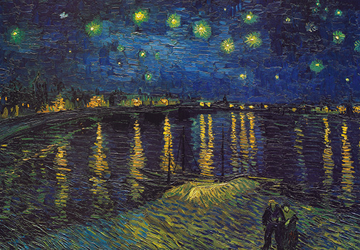
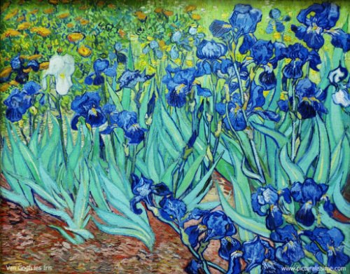
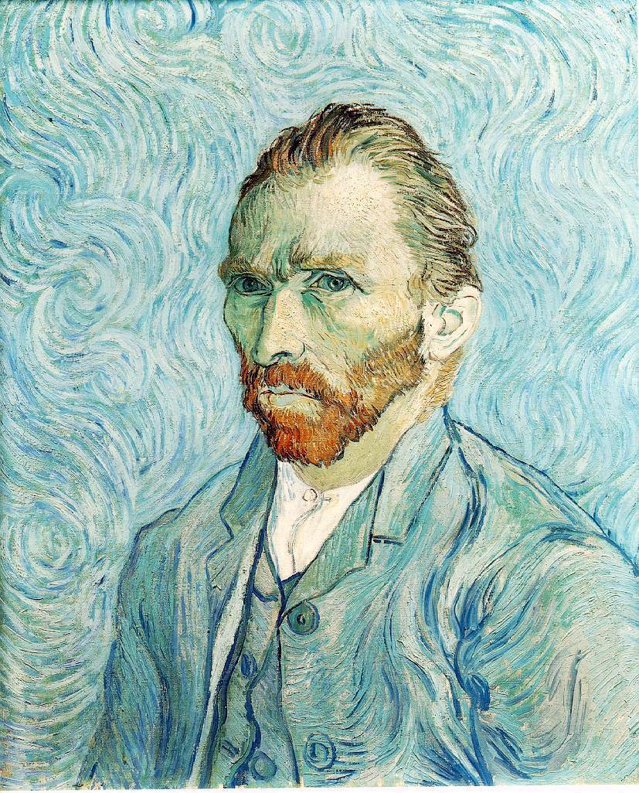
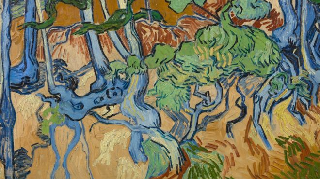

1. View of the Sea at Scheveningen

1882.08
View of the Sea at Scheveningen is the second painting drawn under the guidance of Anton Mobe. Gogh built an easel on the desolate field of the beach and painted the sea view on the canvas at high speed on the beach amid the sand breeze. The bold composition method, which uses a large horizontal space to outline sand, seawater, and dark skies, is in good harmony with the use of thick and expressive paints. Through the realistic expression of the beach scene, it can be seen that Gogh is well aware of contemporary impressionism. Gogh painted while fighting the fluttering sand and the wind sticking to wet paint, most of which were removed from the painting, but several particles still remain between some of the paints.
2. The Potato Eaters

1885.05
The Potato Eaters is considered one of Gogh's masterpieces. Gogh, who saw the lives of farmers sowing seeds and living diligently in Nunen, Netherlands, and vowed to live hard like farmers, painted a picture of five earthy people eating potatoes in a dark room with dim lights on oil lamps, describing the tough reality of rural life. The rough face, large, knotted hands, and dusty potatoes show that he will go his way as a painter. However, although the painting was criticized for being dark and the characters were full of errors, it was the best painting by Gogh himself.
3. Self-Portrait with Gray Felt Hat

1887.10
Self-Portrait with Gray Felt Hat is the first representative work to welcome the audience at the entrance of the Van Gogh Museum in Amsterdam. The dynamic brush strokes, a feast of primary colors shining like starlight, and the contrast between a skinny face and colorful colors express Van Gogh's agonizing inner side more intensely. Overall, very bright paints were used a lot, and the face, an important part of the self-portrait, was mixed with white, pink, and yellow, and occasionally green to make it look very colorful. In 1978, a visitor tore this work into an X-shape with a knife, and fortunately, it was restored well, so you can't see it from the front, but if you look up from the bottom, you can see the X-shape.
4. Sunflowers

1888.08
5. Café Terrace at Night

1888.09
The cafe terrace at night is the first work Van Gogh completed during his stay in Arles, France, and is a painting of the night view of an outdoor cafe located in Arles' Forroom Square. When describing houses and intense colors of dark blue and bright yellow, such as coloring the cafe's shade with yellow, which is close to lemon, it is not bound by perspective and exaggerates its shape to reveal the passionate inner world.
6. Starry Night over the Rhone
1888.09
7. The Yellow House

1888.09
8. The Bedroom in Arles

1888.10
9. Self Portrait with Bandaged Ear

1889
10. he Starry Night

1889
11. Irises
1889.05
12. Cypresses

1889.06
13. Autoportrait
1889.09
14. Wheatfield with Crows

1890.07
15. Tree Roots
1890.07